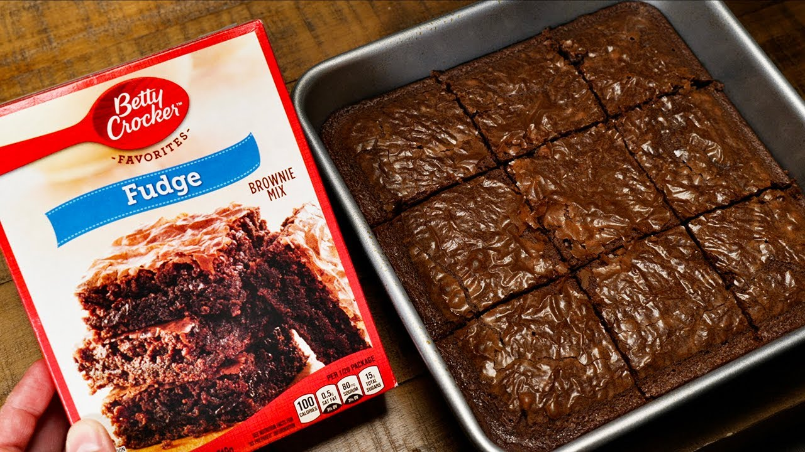

Home
Brownies

Description
For a simple, delicous dessert, there is no shame in using a box mix. This dish comes together
quickly and allows you to close out your dinner with a sweet treat.
Ingredients
- Betty Crocker Brownie Mix
- 2 Tablespoons Water
- 1/2 cup of Vegetable Oil
- 2 Eggs
Steps
- Preheat oven 350 Degrees F
- Stir Brownie mix, water, oil, and eggs in a medium bowl
- Once well blended, pour mix into baking pan
- Bake for 20-30 minutes
- Use a toothpick to insert into brownies. If it comes out almost clean, they are done
- Allow to cool, and enjoy